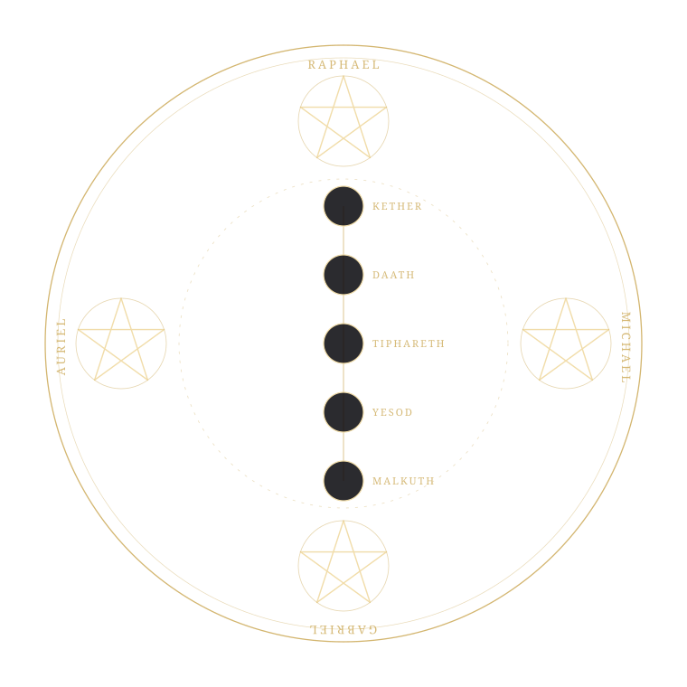

Rites and Operations
Four practices, given as the tradition gives them and as psychology reads them. Three are structural (open, hold, close). The fourth is the one that decides whether any of it is worth anything: writing it down.
Every school in this cabinet, however much it disagrees about what is being contacted, converges on the same ritual architecture. Mark a boundary. Establish a standpoint at the centre. Do one thing. Close the boundary. Record it. The tradition explains this as protection from real entities; psychology explains it as the frame that keeps an encounter with the unconscious from leaking into the rest of a life. The instructions are identical either way.
The Lesser Banishing Ritual of the Pentagram
The first ritual taught in the Golden Dawn and still the most used in Western practice. It has four movements, and it takes about four minutes.
- The Qabalistic Cross. Standing, touch the forehead, the breast, the right shoulder, the left shoulder, then join the hands, naming at each point the crown, the kingdom, the power and the glory. The body is being given an axis.
- The four pentagrams. Facing east, trace a banishing earth pentagram in the air, starting at the lower left point, and vibrate a divine name. Turn to the south, west and north and repeat, joining each pentagram to the next with a traced line, so that a circle is closed.
- The evocation of the archangels. Arms extended, name Raphael before you, Gabriel behind, Michael on the right, Auriel on the left, with the four quarters and their elements.
- Repeat the cross. The rite ends where it began, which is the point.
Nothing in it requires belief in the archangels. Read as psychology it is an orientation exercise: a body axis, four marked directions, four named functions at the quarters, and a deliberate return to the centre. Performed daily for a month it reliably changes how a person enters a room, which is an empirical claim anyone can test.
Five spheres, from the crown to the feet
A seated exercise in visualisation and sound, developed in the Golden Dawn and popularised by Israel Regardie, who was also a practising psychotherapist and quite explicit that he read it as a psychological technique.
| Sphere | Placed at | Vibrated name | What is being cultivated |
|---|---|---|---|
| Kether | Just above the crown of the head | Eheieh | Contact with what is beyond the personal: the sense of being addressed rather than self generated. |
| Daath | The throat | Yhvh Elohim | Knowledge, and the narrow place where insight becomes speech. |
| Tiphareth | The centre of the chest | Yhvh Eloah va-Daath | The seat of the integrated personality: warmth, balance, the sun of the system. |
| Yesod | The pelvis | Shaddai El Chai | Imagination, the astral, dream and the tidal quality of mood. |
| Malkuth | The feet | Adonai ha-Aretz | Grounding: the body, the day, the bills. Without this the rest becomes inflation. |
Having built the pillar, the light is circulated: down the front and up the back, then side to side, then fountained from the feet to the crown. Regardie's instruction is that the circulation matters more than the imagery being vivid.
Active imagination
The most careful of the four, and the one with a clinical literature behind it. Jung developed it on himself during the years of the Black Books and the Red Book, and then taught it with a set of guard rails.
- Take one image. A figure from a dream, a mood given a face, a place that keeps returning. Not a theme: one image.
- Let it move. Do not steer it, and do not interpret while it is happening. Interpretation is afterwards, in writing.
- Speak to it and answer it. The ego stays present and keeps its own position, including disagreement. This is what separates the practice from fantasy on one side and from possession on the other.
- Give it a form. Write the dialogue, paint the figure, carve it, dance it. Jung considered this step obligatory: what is not given form does not become conscious.
- Take it into the day. If the session changes nothing in conduct, it was entertainment.
Jung's own caution, and it is not decorative: this is not an exercise for a person who is currently flooded, dissociating or in crisis. The ego needs to be strong enough to hold a standpoint. Where it is not, the practice makes things worse, and the right step is care from a qualified person.
Compare
- Golden Dawn: scrying in the spirit vision
- Enter the symbol, travel in it, test what you meet by a sign, return by the way you came.
- Crowley: the invocation of a spirit
- Assume the god form, vibrate the name, hold the contact, banish, and write up the result in the record with the time and duration.
- Jung: active imagination
- Hold the image, let it act, answer it in your own voice, give it form, close the session.
Three cosmologies, one procedure. The disagreement is about what is on the other side of the image, and no amount of practice settles it. That is worth saying plainly rather than blurring.
The magical record
Crowley's one unambiguous methodological gift to the tradition. Keep a dated record of every practice: what was done, for how long, in what condition, with what result, and with what failures. Then read it back after six months.
What goes in
- Date, time, duration, place.
- The practice, exactly, including the wording used.
- Physical condition: sleep, food, illness, anything taken.
- What happened, in plain language, before any interpretation.
- The interpretation, marked as interpretation.
- What did not happen, and every session skipped.
Why it works
A record makes memory falsifiable. Without one, a practitioner remembers the three casts that landed and forgets the twenty that did not, and after a year of that anyone becomes a believer in their own method.
With one, two useful things happen. Genuine patterns become visible over months, which no single session can show. And the honest record of failures is the strongest available protection against the inflation that the whole literature warns about: it is hard to think you are a chosen vessel while reading your own notes from March.
The planetary days and hours
Traditional practice times an operation to its planet. The days are simple and survive in the names of the week. The hours are older and stranger: the period from sunrise to sunset is divided into twelve, and the night likewise, so a planetary hour is rarely sixty minutes.
| Day | Planet | Suited to |
|---|---|---|
| Sunday | Sun | Health, authority, beginnings, anything to do with the centre of a life |
| Monday | Moon | Dream, memory, the tides of mood, matters of home and water |
| Tuesday | Mars | Conflict, surgery, courage, cutting something off |
| Wednesday | Mercury | Speech, writing, accounts, travel, negotiation, study |
| Thursday | Jupiter | Expansion, patronage, law, generosity, long plans |
| Friday | Venus | Attachment, art, reconciliation, pleasure, craft |
| Saturday | Saturn | Limit, endings, discipline, burial, the long slow work |
The first hour after sunrise belongs to the ruler of the day, and the rest follow in the Chaldean order: Saturn, Jupiter, Mars, Sun, Venus, Mercury, Moon, repeating. The correspondences of each planet, with its angel, intelligence, spirit and square, are in the hierarchies.